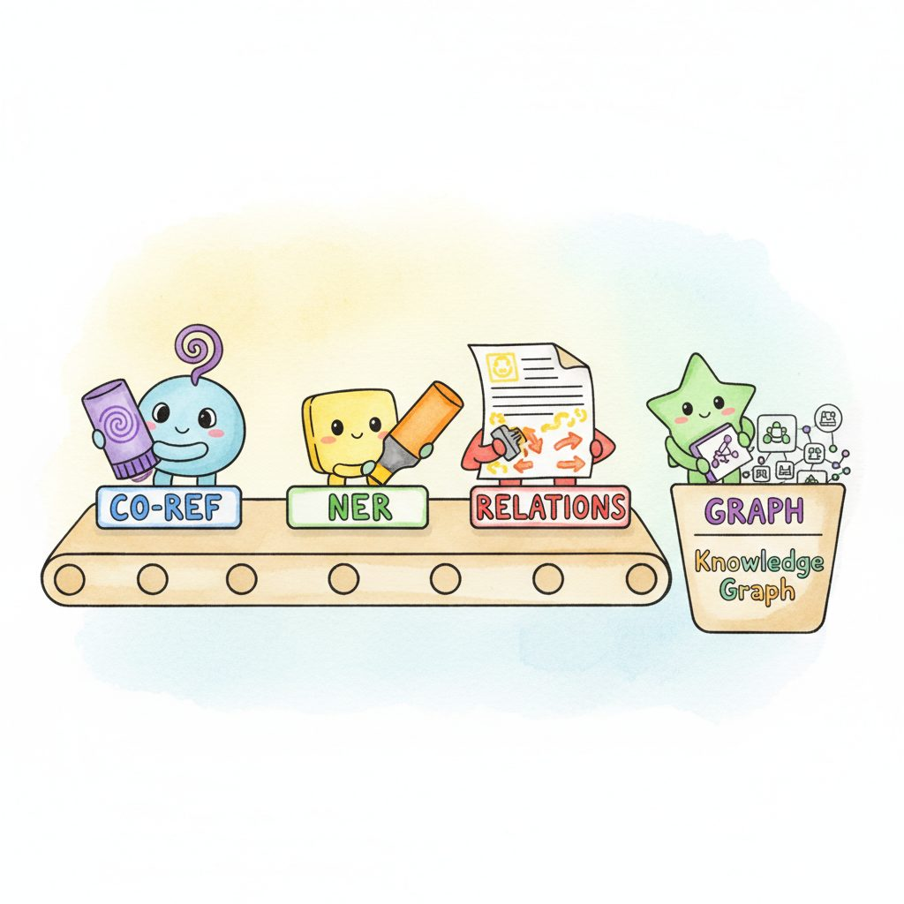

"I found 200 mentions of 'she' in your contract and confidently linked exactly zero of them to a named party. Coreference is the chapter where the pronouns finally meet their nouns."
Lexica, Pronoun-Resolving Mention-Cluster AI Agent
Coreference resolution is the silent infrastructure of every cross-document RAG and structured-IE LLM pipeline: until you know that "Dr. Smith", "she", and "the cardiologist" refer to the same person, your downstream joins, deduplication, and entity tables are quietly wrong. This section covers the modern transformer-based coreference systems and how they slot into production document pipelines.
Prerequisites
This section assumes the IE architectures from Section 34.1 through Section 34.4, the encoder-only transformer architecture from Section 4.4, and the BERT-style pretraining objective from Section 5.1.
34.5.1 Coreference Resolution
Consider the following passage: "Dr. Sarah Chen published a groundbreaking paper on protein folding. She presented her findings at NeurIPS, where the Stanford researcher received a standing ovation." A human reader immediately understands that "She," "her," and "the Stanford researcher" all refer to Dr. Sarah Chen. Coreference resolution is the NLP task of identifying these mention clusters: groups of expressions that refer to the same real-world entity.
Coreference resolution is a prerequisite for high-quality information extraction, document summarization, and question answering over long documents. Without it, an IE pipeline might extract "She diagnosed the patient" without knowing who "She" refers to, producing a relation triple with an unresolved pronoun instead of a named entity. For knowledge graph construction, unresolved coreferences lead to disconnected nodes that should be merged.
Coreference resolution is the glue that holds document-level IE together. NER identifies what entities appear in a document; coreference resolution identifies which mentions refer to the same entity. Without coreference, an extraction pipeline processing a 10-page contract might find 200 entity mentions but have no way to determine that 30 of them all refer to the same party. This linking step is essential before building knowledge graphs or feeding extracted data into RAG systems (Chapter 32).
34.5.1.1 Classical Approaches
Coreference resolution has a rich history in NLP, progressing through several paradigm shifts over three decades.
- Mention-pair models: The earliest neural approach. A binary classifier scores every pair of mentions in a document, predicting whether they are coreferent. Pairs scoring above a threshold are linked into clusters using transitive closure. Simple to implement but quadratic in the number of mentions, and local pairwise decisions can produce globally inconsistent clusters.
- Entity-based (mention-ranking) models: Instead of scoring pairs independently, these models maintain a representation of each entity cluster and score whether a new mention should join an existing cluster or start a new one. This produces more globally consistent clusters but requires careful cluster representation (typically averaging mention embeddings).
- End-to-end neural coreference (Lee et al., 2017): The landmark paper that eliminated the need for a separate mention detection step. The model jointly learns to identify mentions and cluster them using span representations from a bidirectional RNN/LSTM (later upgraded to transformers). It considers all spans up to a maximum width, scores each span as a potential mention, and links mentions to their most likely antecedent. This architecture, refined in subsequent work (Lee et al., 2018; Joshi et al., 2020), remains the backbone of most production coreference systems.
- spaCy integration: The
corefereeandneuralcoreflibraries add coreference resolution to spaCy pipelines. While not state-of-the-art in accuracy, they provide fast, pipeline-integrated coreference that is sufficient for many production use cases.
End-to-end neural coreference scores every text span as a candidate mention and, for each, picks an antecedent from the spans before it (or a special dummy 'no antecedent'). Each span gets a vector built from its boundary token states plus an attention-weighted head word; a mention score s_m and a pairwise score s_a combine into s(i,j)=s_m(i)+s_m(j)+s_a(i,j). For span i the model takes a softmax over all earlier spans plus the dummy, and is trained to put mass on any correct antecedent, so coreference clusters emerge from transitive links without a separate mention-detection step (Lee et al., 2017, arXiv:1707.07045). Because considering all span pairs is roughly O(n^4), the model prunes to the top spans by mention score first; SpanBERT/transformer encoders (Joshi et al., 2020) later replaced the original biLSTM.
The coreferee and neuralcoref packages are aging (neuralcoref is unmaintained against current spaCy 3.x). For 2024-26 work, fastcoref (Otmazgin, Cattan, and Goldberg, 2022) is the modern drop-in: it ships an end-to-end LingMess model that matches state-of-the-art accuracy on OntoNotes while running roughly an order of magnitude faster than older models, and it plugs into spaCy with a single nlp.add_pipe call. Prefer fastcoref when you want production-grade coreference without leaving the spaCy pipeline.
Show code
pip install fastcoref spacy
import spacy
from fastcoref import spacy_component # registers the pipe
nlp = spacy.load("en_core_web_sm")
nlp.add_pipe("fastcoref") # or "fastcoref" with config={"model_architecture": "LingMessCoref"}
doc = nlp("Dr. Chen presented her paper. She received an ovation.")
print(doc._.coref_clusters) # -> [[(0, 2), (5, 6), (8, 9)]]fastcoref as the modern spaCy coreference pipe.| Approach | Key Work | Strengths | Limitations |
|---|---|---|---|
| Mention-pair | Clark and Manning (2016) | Simple architecture, easy to train | Quadratic complexity, inconsistent clusters |
| Entity-based | Wiseman et al. (2016) | Globally consistent clusters | Complex cluster representations |
| End-to-end neural | Lee et al. (2017, 2018) | Joint mention detection and linking, state-of-the-art accuracy | High memory usage for long documents |
| LLM-based | Zero-shot prompting | No training data, handles complex cases | Context window limits, cost, latency |
Whatever method does the linking, its job is the one pictured in Figure 34.5.1: collapse every surface form that points at a person into a single canonical entity.
34.5.1.2 LLM-Based Coreference Resolution
LLMs can perform coreference resolution zero-shot by leveraging their deep understanding of language, world knowledge, and discourse structure. This is particularly valuable for domains where labeled coreference data is scarce (legal documents, medical records, technical specifications) or where the mentions involve complex reasoning ("the acquisition target" referring to a company mentioned three paragraphs earlier). The trade-off is cost and context window limitations: coreference inherently requires processing entire documents, which can be expensive for long texts.
# LLM-based coreference resolution with structured output
# Returns mention clusters linking all expressions that refer to the same entity
from pydantic import BaseModel, Field
from openai import OpenAI
import instructor
client = instructor.from_openai(OpenAI())
class Mention(BaseModel):
text: str = Field(description="The mention text as it appears in the document")
sentence_index: int = Field(description="Zero-based index of the sentence")
mention_type: str = Field(description="One of: proper_name, pronoun, nominal, or definite_description")
class CoreferenceCluster(BaseModel):
entity_name: str = Field(description="Canonical name for this entity")
entity_type: str = Field(description="Entity type: PERSON, ORG, LOCATION, EVENT, OTHER")
mentions: list[Mention]
class CoreferenceResult(BaseModel):
clusters: list[CoreferenceCluster]
resolved_text: str = Field(
description="The original text with pronouns replaced by entity names in brackets"
)
def resolve_coreferences(document: str) -> CoreferenceResult:
"""Single LLM call returning typed coreference clusters."""
return client.chat.completions.create(
model="gpt-4o",
response_model=CoreferenceResult,
messages=[
{"role": "system", "content": (
"Perform coreference resolution on the document. Identify all mentions "
"(proper names, pronouns, nominal descriptions) that refer to the same "
"entity and group them into clusters. For each cluster, provide a canonical "
"entity name and type. Also produce a version of the text where pronouns "
"are replaced with the entity name in square brackets."
)},
{"role": "user", "content": document},
],
max_retries=2,
)
document = """
Dr. Sarah Chen joined Anthropic in 2023 after leaving Google Brain. She
quickly became the lead of the safety team, where the former DeepMind
intern brought fresh perspectives on interpretability. Her team published
three papers at NeurIPS that year. The company credited Chen's leadership
for the rapid progress.
"""
result = resolve_coreferences(document)
for cluster in result.clusters:
mentions_str = ", ".join(f'"{m.text}" ({m.mention_type})' for m in cluster.mentions)
print(f"{cluster.entity_name} [{cluster.entity_type}]:")
print(f" Mentions: {mentions_str}")
print()
print("Resolved text:")
print(f" {result.resolved_text}")
Who: A legal tech company building a contract analysis platform that extracts obligations, deadlines, and parties from multi-page agreements.
Situation: Contracts frequently use pronouns ("the Party," "it," "said Company") and definite descriptions ("the Licensor," "the aforementioned entity") to refer to named parties introduced at the beginning of the document.
Problem: Their sentence-level NER pipeline correctly identified obligations ("shall deliver the software by March 2025") but could not determine which party held the obligation when the sentence used a pronoun or definite description rather than a proper name.
Decision: They added a coreference resolution pass before relation extraction, using an LLM for the first page (where parties are introduced with complex legal language) and a lighter neural model for the remainder of the document (where coreference patterns are more formulaic).
Result: Obligation extraction accuracy improved from 71% to 89% F1 because the system could now correctly attribute obligations to specific parties. Processing cost increased by only $0.02 per contract because the LLM handled only the first page while the neural model processed the remaining pages at near-zero cost.
Lesson: Coreference resolution is not optional for document-level IE. Without it, relation extraction produces ungrounded results that cannot be used for downstream reasoning.
34.5.1.3 Applications of Coreference Resolution
- Document summarization preprocessing: Replacing pronouns with canonical entity names before summarization prevents the summarizer from producing ambiguous output like "She announced the deal" without context for who "She" is.
- Knowledge graph construction: Coreference clusters map directly to entity nodes. All mentions in a cluster contribute attributes and relations to the same node, producing a denser, more connected graph. See Section 31.5 for entity linking techniques that connect these nodes to external knowledge bases.
- Question answering over long documents: When a user asks "What did the CEO announce?", the QA system must resolve "the CEO" to a specific person mentioned earlier in the document. Coreference resolution, applied as a preprocessing step, enables RAG systems (Chapter 32) to retrieve and reason over the correct entity.
- Multi-document analysis: Cross-document coreference links mentions of the same entity across different documents, enabling corpus-level knowledge aggregation. Combined with embedding-based entity similarity (Chapter 31), this supports entity-centric search and analysis across large document collections.
34.5.2 Integrated Document Understanding Pipeline

The IE techniques covered in this section (NER, Open IE, event extraction, and coreference resolution) are most powerful when combined into an integrated pipeline. Each component addresses a different dimension of document understanding: NER identifies what entities are present, Open IE captures how entities relate to each other, event extraction reveals what happened, and coreference resolution determines which mentions refer to the same thing. Together, they transform unstructured text into a rich, queryable knowledge representation.
A practical integration follows a four-stage architecture.
- Stage 1: Coreference resolution. Process the full document to identify mention clusters. Replace pronouns and definite descriptions with canonical entity names, producing a "resolved" version of the text where every sentence is self-contained.
- Stage 2: NER and entity linking. Run classical NER (spaCy) on the resolved text to extract typed entities. Link entities to canonical identifiers using embedding similarity against a reference knowledge base (Chapter 31).
- Stage 3: Relation and event extraction. Apply Open IE and event extraction (LLM-based) to extract triples and structured events. Because the text is already coreference-resolved, extracted relations contain canonical entity names rather than ambiguous pronouns.
- Stage 4: Knowledge graph assembly. Merge entities, relations, and events into a unified graph structure. Deduplicate entities across the document, assign confidence scores, and validate against grounding constraints.
Stage 1 → Stage 2 → Stage 3 → Stage 4. Resolve coreferences first so pronouns become canonical names; then run NER and entity linking on the resolved text so spans are typed and grounded to a knowledge base; then extract relations and events from the now-self-contained sentences; finally assemble entities, relations, and events into a deduplicated knowledge graph. Each stage consumes the output of the previous one and adds a distinct dimension of structure: which mentions co-refer, what type each entity is, how entities relate and what events occurred, and how it all fits together as a queryable graph. Skipping or reordering a stage breaks the dependency chain: relation extraction without prior coreference yields ungrounded triples; graph assembly without prior entity linking yields disconnected nodes for the same real-world entity.
The order matters: coreference resolution must precede relation and event extraction. If you extract relations first, you get triples like (She; diagnosed; the patient) with unresolved pronouns. By resolving coreferences first, the same sentence becomes (Dr. Sarah Chen; diagnosed; John Miller), producing a triple that is immediately useful for knowledge graph construction and downstream querying. This preprocessing step is especially critical for RAG pipelines (Section 35.3) that chunk documents into passages; without coreference resolution, chunked passages lose their referential context.
Most LLM textbooks teach you how to use LLMs. This chapter taught you when NOT to use them, and how to combine them with traditional ML for production efficiency. The triage routing, cascade, and Pareto frontier analysis patterns covered here are rarely found in textbooks but are standard practice in cost-conscious production systems. The consistent pattern across all five sections: start cheap and simple, escalate to expensive and powerful only when needed.
Who: A health informatics team at a hospital network digitizing 10 years of handwritten and dictated physician notes (approximately 2 million documents).
Situation: They needed to extract structured fields (diagnoses, medications, dosages, allergies, procedures) from free-text clinical notes to populate a searchable electronic health record system.
Problem: Traditional NER models trained on general biomedical text achieved only 68% F1 on their notes because the language was highly abbreviated, used non-standard shorthand, and varied significantly across 200 physicians.
Dilemma: They could manually annotate thousands of notes and train a custom NER model (accurate but 6 months of work), use an LLM for every document (accurate but prohibitively expensive at $0.15 per note), or combine an LLM extraction pass on a sample with a trained model for the bulk.
Decision: They used GPT-4 with a Pydantic schema to extract structured data from 5,000 representative notes (validated by clinical staff), then used these extractions as training data for a fine-tuned BioBERT NER model that processed the remaining 1.995 million documents.
How: The extraction schema defined nested Pydantic models for each entity type with field-level validators (medication names checked against an RxNorm lookup, ICD codes validated against a code list). The BioBERT model was trained on the LLM-generated labels, with 500 notes manually corrected by clinical coders as a gold standard test set.
Result: The fine-tuned BioBERT achieved 87% F1 (up from 68% with the off-the-shelf model) and processed the full corpus in 3 days on a single GPU at a total cost of $1,200. The LLM extraction of the 5,000 training notes cost $750. Total project cost was under $5,000, compared to an estimated $300,000 for the LLM-only approach.
Lesson: LLM-powered extraction combined with schema validation is an excellent way to generate training data for specialized extraction models; the LLM provides breadth and the schema provides consistency.
Named entity recognition (NER), one of the oldest NLP tasks, has been dramatically simplified by LLMs. What once required weeks of annotation and custom CRF models can now be bootstrapped with a single prompt, then distilled into a fast, specialized model that runs at a fraction of the cost.
You now have a complete IE toolkit: NER, Open IE, event extraction, temporal IE, coreference resolution, hybrid classical-plus-LLM pipelines, grounding verification, and graceful-degradation patterns. The structured entities, relations, and events produced by these pipelines are the raw material that downstream retrieval systems consume. Chapter 35 (Advanced RAG) picks up here: how to chunk and index the structured-and-resolved text from this pipeline, how query rewriting and routing interact with extracted metadata, and how multi-hop retrieval traverses the knowledge graph that Stage 4 of the pipeline produced. The coreference resolution emphasized in this chapter is especially important for chunked RAG: without it, individual passages lose their referential context. Section 35.3 in particular builds directly on the hybrid extraction and grounding patterns introduced here.
Structured information extraction with LLMs is being reshaped by two open research questions in 2024-2026. First, schema-guided extraction at scale. NuExtract and similar zero-shot extractors plus instruction-tuned extractors (Sainz et al., GoLLIE: Annotation Guidelines improve Zero-Shot Information-Extraction, arXiv:2310.03668) show strong domain transfer, but reliable extraction of nested, recursive, or relational schemas (e.g., financial filings, clinical notes) is still uneven. JSON-schema-constrained decoding (Outlines, jsonformer, and structured-output APIs) closes much of the gap, but does not solve hallucination of values that satisfy the schema but are unsupported by the source.
Second, grounded extraction with citations. Source-attributed extraction (Bohnet et al., Attributed Question Answering family of work, 2022-2024) is the foundation, but production systems still struggle to link every extracted field to the exact source span in long documents. See also the 2024-2025 ASTUTE-RAG and GroundedRAG line of work on knowledge conflicts. Expect 2026 to deliver evaluation harnesses that measure both extraction accuracy and span-level grounding jointly, plus better calibrated confidence at the field level for downstream review workflows.
Objective
Take 100 labeled invoices, fine-tune GPT-4o-mini through the OpenAI fine-tuning API with Instructor-validated Pydantic schemas, and compare field-level F1 against a zero-shot baseline. By the end, you will have a working extractor whose JSON output is schema-valid by construction and whose accuracy on the held-out 20 invoices is measurable.
Setup
Use the open RVL-CDIP invoices subset or the FUNSD form-understanding corpus; either gives you 100+ samples with line items, totals, vendor names, and dates. Convert each to (markdown text, target JSON) pairs. You need OpenAI fine-tuning access (gpt-4o-mini-2024-07-18 is fine-tunable) and roughly $5 of credit.
pip install instructor pydantic openai datasets sklearnSteps
- Define the schema: Write a Pydantic model
Invoicewith fields vendor_name, invoice_date (ISO 8601), total_amount, currency, and alist[LineItem]. Validate the 100 gold labels round-trip through it. - Build the fine-tuning JSONL: For each invoice, emit
{"messages": [system, user, assistant]}where the assistant content is the gold JSON. Hold out 20 invoices as test; upload the remaining 80 withopenai.files.createand launch a job withopenai.fine_tuning.jobs.create. - Wrap the fine-tuned model with Instructor: Once the job finishes (15 to 25 minutes), pin the fine-tuned model ID and call it via
instructor.patch(openai.OpenAI()).chat.completions.create(response_model=Invoice, ...). The Pydantic validation runs automatically and retries on schema failure. - Run the zero-shot baseline: Call the base
gpt-4o-miniwith the same Instructor wrapper on the 20 test invoices. - Score field-level F1: For each field (vendor, date, total, line-item rows) compute precision, recall, and F1 against the gold. Print a confusion table of which fields the fine-tune helped most.
Expected Output
Fine-tuned F1 on totals and dates typically jumps from roughly 0.85 to 0.95+; vendor name (free text) improves less. Line-item extraction is where the biggest gains live, often 0.70 to 0.90.
Extension
Add a confidence-score field per extracted entity and route low-confidence outputs to a human review queue; measure the precision-coverage tradeoff at three threshold settings.
Show Answer
Show Answer
max_retries parameter. When the LLM returns JSON that fails Pydantic validation (missing required fields, wrong types, or values outside specified ranges), Instructor sends the validation error message back to the LLM and asks it to produce a corrected response. This approach resolves the vast majority of parsing failures without manual intervention. If all retries are exhausted, Instructor raises a validation exception that the calling code can handle.Show Answer
Show Answer
Show Answer
Show Answer
Show Answer
Show Answer
Continue to Section 35.1: Advanced RAG Techniques.